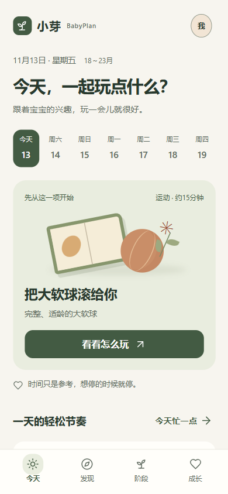
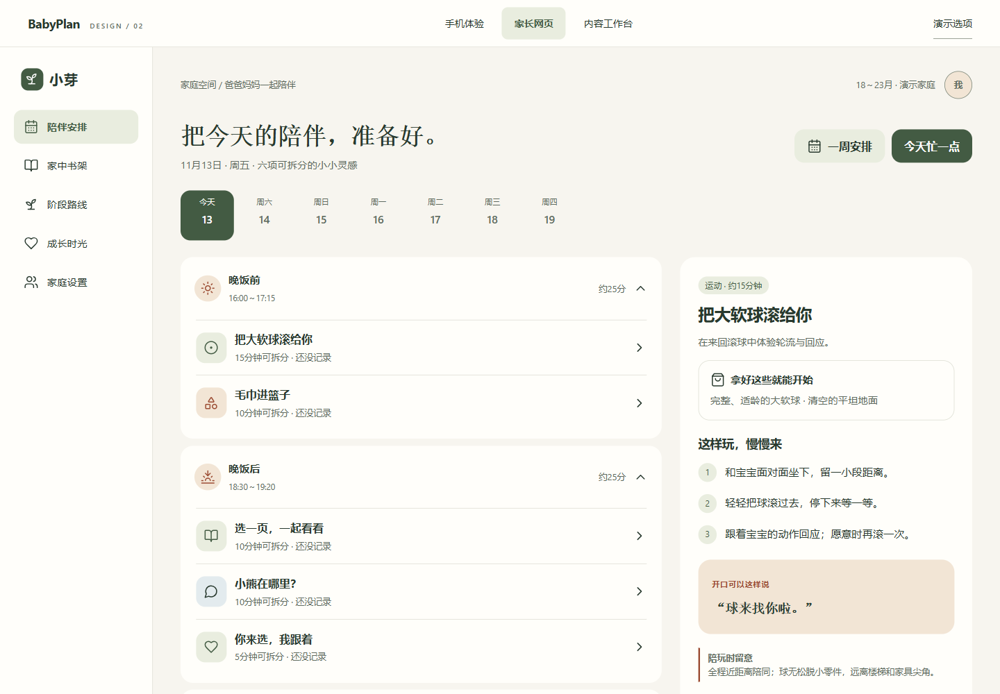

01
看看今天怎么玩
首页突出一项。材料、三个步骤、一句开场话术，都在手边。
试读一张活动卡 →不用自己备课，也不用追着打卡。
打开看看怎么玩，放下手机，一起慢慢长大。
为18～23月龄家庭设计 · 爸爸妈妈一起用
可点击原型，使用虚构数据，尚不是可安装的App。

系统准备一天的内容；你可以换一个、少玩一点、让孩子带着玩。记录是为了下次更懂彼此。
首页突出一项。材料、三个步骤、一句开场话术，都在手边。
试读一张活动卡 →喜欢就重复，只看也可以，想停就结束。英文和数量自然出现在游戏里。
看看24个活动 →爸妈谁陪谁记。孩子的原话、第一次和小故事，慢慢留在一起。
看看成长时光 →运动与动手探索
把小物件变成小游戏。
中文共读、英语与孩子主导
一页书，也有很多回应。
熟悉内容与轻轻的道别
困了就结束，不为凑时间。
纸白、橄榄绿与少量陶土色。四个清楚的入口：今天、发现、阶段、成长。没有积分、排名和连续打卡提醒。
即刻看卡、随手记录、切换玩法、阶段支持。演示离线与冲突时怎样恢复。
打开手机体验 ↗看完整一周、整理已有绘本、回看成长、打印安排与导出记录。
打开家长网页 ↗草稿、审阅、版本发布与撤回分开；草稿不会直接进入孩子的安排。
打开内容工作台 ↗
24张原创活动候选、7天×6项安排、4个年龄节点的12条阶段支持。宝宝只看、愿意跟着玩、想停止时，都有具体的回应方式。
| 领域 | 一部分玩法 | 自然接触什么 |
|---|---|---|
| 共读 | 选一页、书里动物、书与实物 | 来回交流、图物联系 |
| 运动 | 大软球、拍手、慢慢走停 | 轮流、模仿、身体动作 |
| 探索 | 毛巾入篮、套杯、两只袜子 | 里面外面、小数量、手部操作 |
| 英语 | 找小熊、打招呼、给你再给我 | 把短句和眼前动作连起来 |
| 孩子主导 | 你来选、我学你、玩偶的一天 | 主动选择、兴趣、假装 |
| 安静收尾 | 喜欢的一页、轻声晚安、玩具回家 | 熟悉、回应与日常节奏 |
采用模块化单体架构。手机先保存到本机，联网再同步；两个人同时改同一条时保留双方。内容更新保留历史，安全撤回单独处理。
真实账号、通知、双机同步、媒体上传和数据库仍需后续开发。浏览器原型不会被当成这些能力已经完成的证明。
原讨论稿、旧规格、低保真与静态效果图都保留。新开发以docs/v2和contracts/v2为依据；旧版的一日一卡和单设备凭证不再套用。查看旧低保真 →